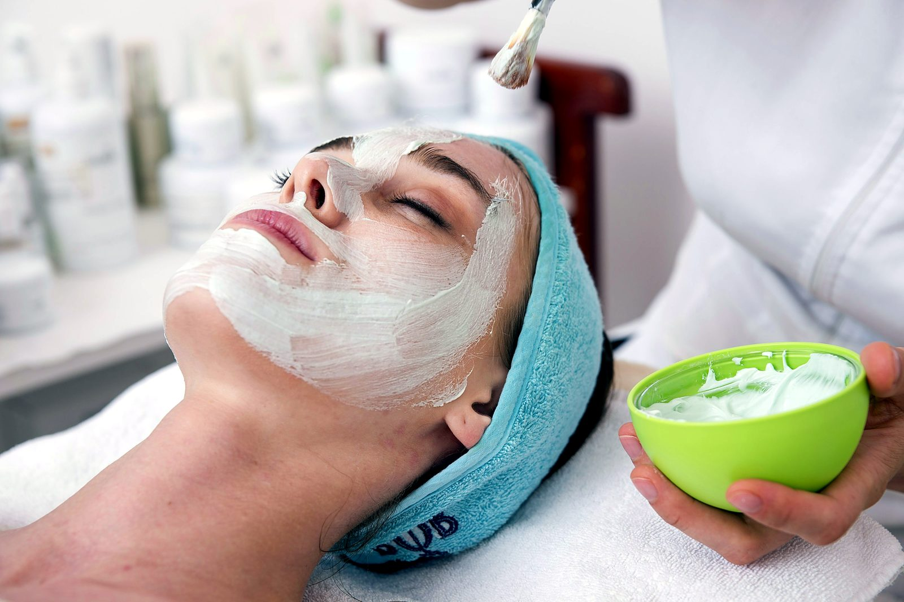
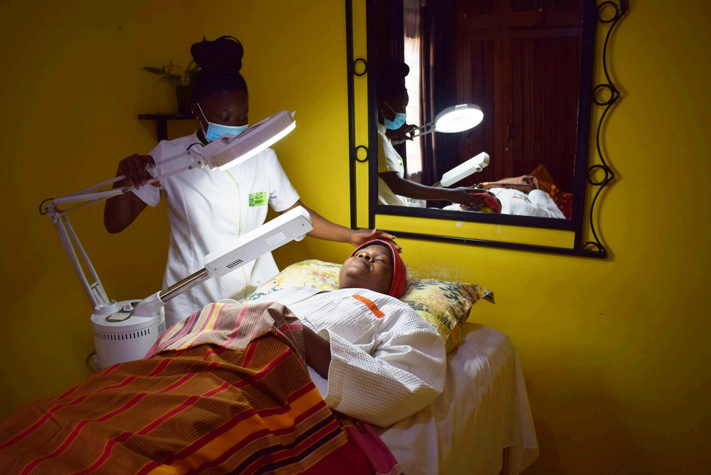

Facials, done properly.
Six facials at the shop, every one built the same honest way: a real cleanse, gentle exfoliation, a mask matched to your skin, then serum, moisturizer and SPF to finish. No machines and no mystery, creams, masks and a full hour of care, priced at the middle of the South Florida market.
Want to spread it out? On services of $35 or more, you can split your payment at checkout with Klarna or Affirm — pay over time instead of all at once, right on the payment page.
Book a facial
How every facial runs
- We start by looking at your skin and asking what it needs, the mask and products are matched to you, not poured from one bottle for everybody.
- Double cleanse first, then gentle exfoliation: strong acids and aggressive scrubs are not our default, especially on melanin-rich skin, where they can leave dark marks.
- Serum, moisturizer and SPF finish every facial, you never walk out with a bare, unprotected face.
- Products are gentle and fragrance-free wherever your skin calls for it, and everything used on you is explained as we go.
Pricing
Six facials, $95 to $140. Every price below is set at the middle of the South Florida market, the same rule as the rest of the KuuStore menu. A $25 booking fee holds your appointment and comes off your total in full, on the day, you pay only the balance.
Classic facial, $95
The full standard facial, and the right place to start: a double cleanse, gentle exfoliation, a mask matched to your skin, then serum, moisturizer and SPF. An hour of proper skin care, start to finish, the regular reset your face actually needs.
- $95 flat, 60 minutes, the complete facial in order: cleanse, exfoliate, mask, serum, moisturizer, SPF.
- For regular upkeep, dull or tired-feeling skin, and first-time facial clients.
- Products matched to your skin type at the appointment, dry, oily, combination or sensitive.
Hydrating facial, $100
Built for dry, tight, thirsty skin, and South Florida sun and air-conditioning dry skin out faster than most places. A hydrating cleanse, a gentle enzyme mask, layers of moisture worked in one at a time, and a rich finishing cream to hold it there.
- $100 flat, 60 minutes, focused on moisture at every step.
- Gentle enzyme exfoliation instead of strong acids, so dry and sensitive skin stays calm.
- Finished with a rich moisturizer and SPF, so the moisture is sealed in before you leave.
Deep cleansing facial, $110
A deeper clean for skin that feels congested: clogged pores, blackheads, that heavy end-of-week feeling. Double cleanse, exfoliation, careful extractions where your skin needs them, a purifying mask, and a calm, clean finish.
- $110 flat, 60 to 75 minutes, including extractions.
- Extractions are done carefully and only where the skin is ready, nothing is forced.
- A good monthly rhythm for oily and combination skin in Florida humidity.
Acne / purifying facial, $120
For breakout-prone skin: a salicylic-based cleanse that gets into pores, gentle exfoliation, a purifying mask, and light, non-greasy moisture that will not sit heavy on your skin. Plain talk, included: this is cosmetic care. We do not diagnose or treat medical skin conditions, if your skin needs a dermatologist, we will tell you honestly.
- $120 flat, 60 to 75 minutes, with careful extractions where the skin is ready.
- Fragrance-free, non-comedogenic products, nothing that clogs pores goes back on your face.
- Gentle by design: aggressive scrubbing makes breakouts worse, so we do not do it.
Back facial, $110
The facial, for the skin your dresses and tops show off: a full cleanse, exfoliation, a mask and moisturizer across the shoulders and back, the area nobody can reach properly on their own, and the one that gets forgotten until an event is coming.
- $110 flat, 60 minutes, shoulders and full back.
- The same steps as a face facial, in the same order: cleanse, exfoliate, mask, moisturize.
- Popular before events, photos and holiday season, book ahead of the day, not the day before.
Anti-aging facial, $140
Our longest facial, with more time at every step: a double cleanse, gentle exfoliation, a vitamin-rich mask, serum and a rich moisturizer, finished with SPF. Made for skin that feels dry, dull or tired, you bring the face, we bring the hour and a quarter.
- $140 flat, 75 minutes, the longest chair on the facial menu.
- Vitamin-rich masks and serums, chosen for mature and dry skin at your appointment.
- Honest framing: a facial cares for the skin you have. We do not promise to turn back time, and nobody honestly can.
Facials, up close
The real work, step by step: the cleanse, the mask going on, the facial station set up and ready. This is what the hour looks like from the chair.



Photography: real photos shown for illustration, not photos of KuuStore clients. Client photos appear only with written consent, per photo. Credits (each image resized for the web): “Emotions Spa Facial Massage Parlour” by Alvinategyeka, CC BY-SA 4.0, via Wikimedia Commons, “SPA SKIN CARE” by Keyfwellness, CC0, via Wikimedia Commons.


Questions
How long does a facial take?
Most facials are 60 minutes. The deep cleansing and acne facials run 60 to 75 minutes, and the anti-aging facial is 75 minutes. The time is printed next to every price above, no guessing.
How do I pay?
A $25 booking fee holds your appointment, and it comes off your total in full. On the day you pay only the balance, your facial’s price minus the $25, through the confirmed-total button on the booking page.
Is a facial a medical treatment?
No. Our facials are cosmetic skin care: cleansing, exfoliation, masks, serums and moisture. We do not diagnose or treat skin conditions, and if something on your skin needs a doctor, we will say so.
What should I do before my facial?
Arrive with a clean face if you can, makeup is fine, we cleanse first either way. Tell us about anything your skin reacts to, and we will match the products to you.